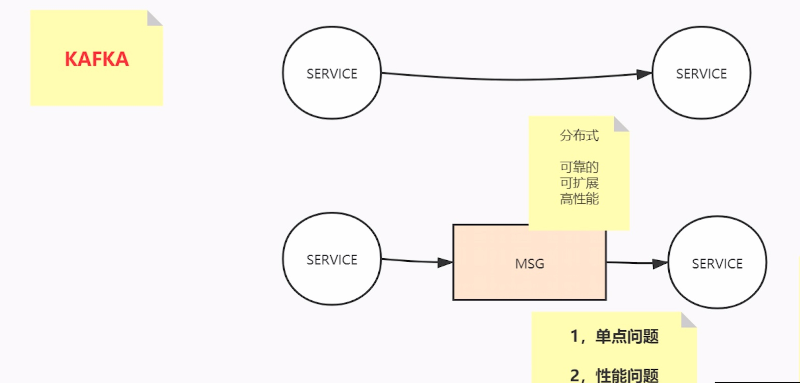
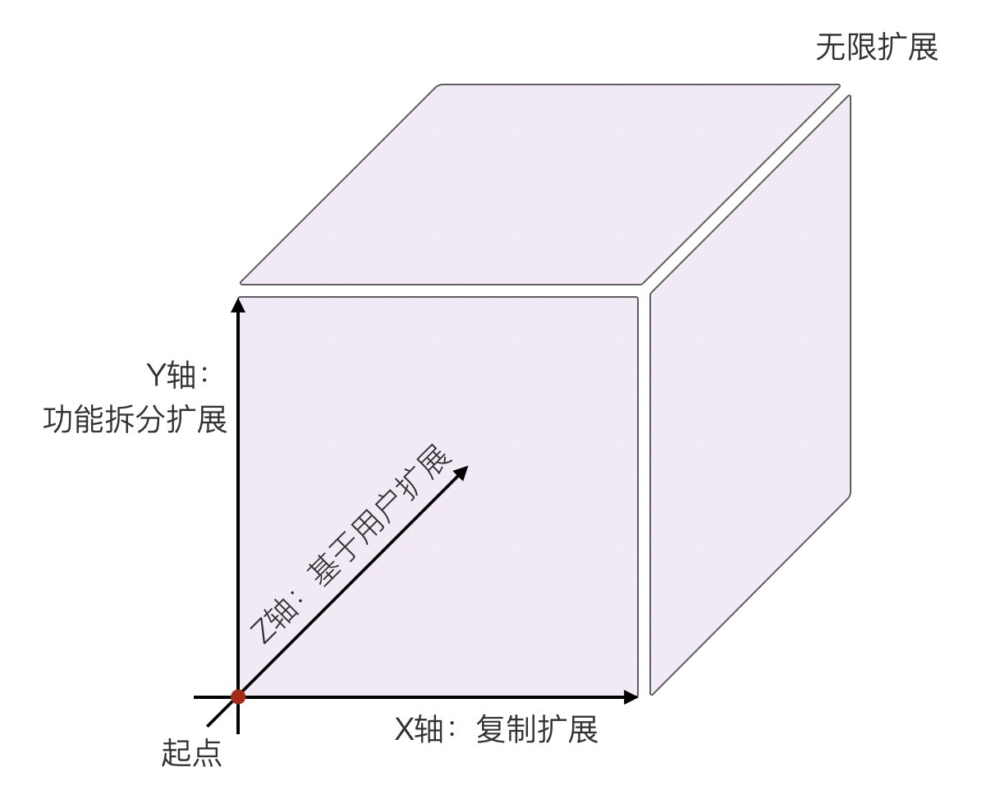
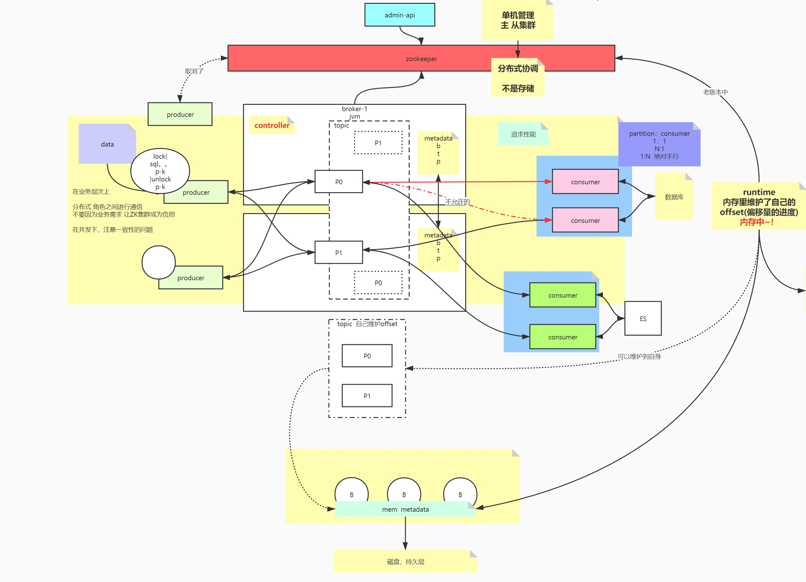
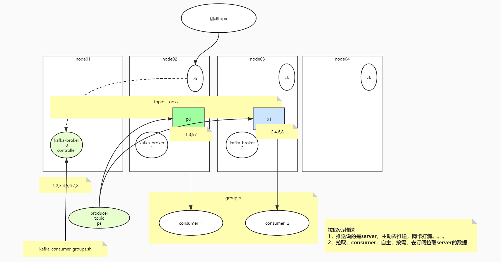

Kafka-Architect
内容列表
kafka引入
AKF原则
kafka架构
可靠性
kafka引入
kafka是什么？
Apache Kafka is an open-source distributed event streaming platform used by thousands of companies for high-performance data pipelines, streaming analytics, data integration, and mission-critical applications.
Apache Kafka is an event streaming platform used to collect, process, store, and integrate data at scale. It has numerous use cases including distributed streaming, stream processing, data integration, and pub/sub messaging.
重点：不只是分布式消息中间件，还是分布式流式消息（事件）处理平台

单体到分布式，引入的问题：可靠性、可扩展性、高性能
AKF原则
AKF 立方体也叫做scala cube，它在《The Art of Scalability》一书中被首次提出，旨在提供一个系统化的扩展思路。AKF 把系统扩展分为以下三个维度：
- X 轴：直接水平复制应用进程来扩展系统。（比如单体服务，但部署时一发动全身）
- Y 轴：将功能拆分出来扩展系统。（拆分微服务，但好的业务迟早会遇见数据瓶颈）
- Z 轴：基于用户信息扩展系统。（数据分区，比如分库分表）

Kafka AKF分析
x轴，对parttion进行副本备份，副本（理论上可以读写分离，但容易出现一致性问题，干脆只能在主P上进行读写）
y轴：topic，不同的业务使用不同topic
z轴：partiton，对无关的数据打散到不同的分片，分而治之。将相关的数据按顺序聚合到同一个分片
Kafka数据处理思路
无关的数据，必然分治——>无关的数据就分散到不同的分区里，以追求并发并行
有关的数据，聚合——> 有关的数据，一定要按原有顺序发送到同一分区里
分区内部有序，分区外部无序
kafka架构
核心组件：Zookeeper、Broker、Topic、Partition、Producer、Consumer、Consumer Group
Zookeeper
单机管理->主从集群 分布式协调，zk不用于存储（相当于服务网关，负责路由转发）
旧版本
producer是通过zookeeper获取集群节点信息的，zk除了是个协调以外，还是个存储DB，offset是维护在zookeeper当中
新老版本的区别
角色之间通信，在业务层次上不再依赖zookeeper（减少zk的负载），只是个协调
元数据Metadata：topic，partition，broker
kafka架构图

核心组件的关系
broker与zookeeper的关系？
broker与partition的关系？
controller是个啥？
创建一个topic的过程

Producer
在并发情况下，注意一致性（顺序性保证）的问题
lock() {
sql
producer.produce()
} unlock();
数据保存在哪里？
kafka的broker的partition里
Consumer
consumer与patition的关系：1:n/ 1:1
思考，consumer与patition的关系n:1可不可以? 破坏有序性
group
不同业务组之间，需要消费同一topic的数据，可以使用不同的group
在单一的使用场景下，先要保证，即便追求性能，用多个consumer，应该注意，不能一个分区由多个consumer消费
数据的重复利用是站在group上
offset
比如consumer重启，会不会导致数据重复消费和丢失，围绕的是消费的进度offset
起初consumer在runtime里维护自身的consumer
旧版本的offset是通过consumer与zookeeper通信维护的
新版kafka能自己维护offset
offset持久化节奏，频率，先后？
两大问题：
- 丢失
- 重复消费
异步的：每间隔5s，先处理业务逻辑，异步提交offset，重复消费
同步的：处理业务逻辑，同步提交offset
Consume流程没处理好，提交offset在业务逻辑处理之前，导致丢失
hbase,es,myisam顺序写
新版offset的维护
consumer->broker(runtime)->mem metadata->磁盘，持久层